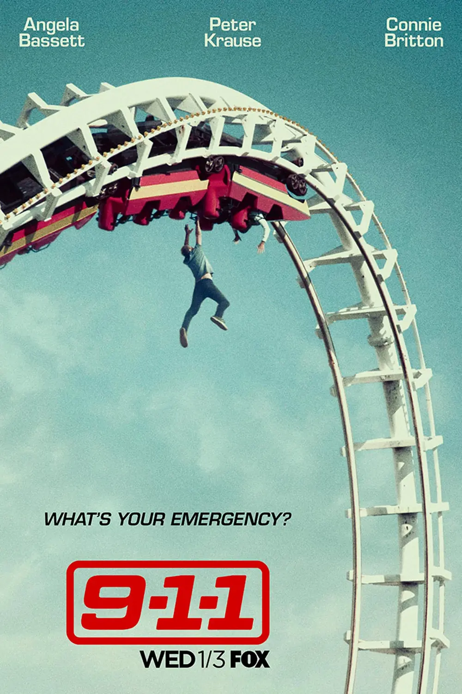

Audio sample of 118 Firefighter Buck saving a woman who ridiculously ended up calling him a demon:
Favorite scene clip:
"9-1-1, what's your emergency?" — a line of dialogue always exist by the 911 dispatcher.
The Station 118 is part of the fictional LAFD in the show.
My favorite character during the in-show is Oliver Stark, which he plays the character role as Evan "Buck" Buckley, the 118's dedicated firefighter.
The DOM screenshot for this project is saved as dom-tree.png.
9-1-1 © is a trademark of its respective network and studio; BY IN WHICH, this is a fan-made project.